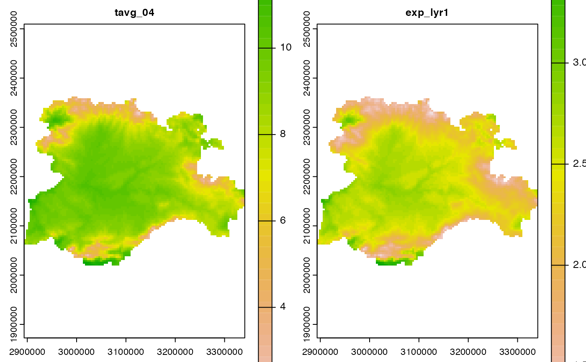

Create, modify, and delete cell values/layers/attributes of Spat* objects
Source:R/mutate.Spat.R
mutate.Rdmutate() adds new layers/attributes and preserves existing ones on a
Spat* object. transmute() adds new layers/attributes and drops existing
ones. New variables overwrite existing variables of the same name. Variables
can be removed by setting their value to NULL.
Usage
# S3 method for SpatRaster
mutate(.data, ...)
# S3 method for SpatVector
mutate(.data, ...)
# S3 method for SpatRaster
transmute(.data, ...)
# S3 method for SpatVector
transmute(.data, ...)Arguments
- .data
A SpatRaster created with
terra::rast()or a SpatVector created withterra::vect().- ...
data-maskingName-value pairs. The name gives the name of the layer/attribute in the output. Seedplyr::mutate().
terra equivalent
Some terra methods for modifying cell values:
terra::ifel(), terra::classify(), terra::clamp(), terra::app(),
terra::lapp(), terra::tapp()
Methods
Implementation of the generics dplyr::mutate(), dplyr::transmute()
functions.
SpatRaster
Add new layers and preserves existing ones. The result is a
SpatRaster with the same extent, resolution and crs than .data. Only the
values (and possibly the number) of layers is modified.
transmute() would keep only the layers created with ....
SpatVector
This method relies on the implementation of dplyr::mutate() method on the
sf package. The result is a SpatVector with the modified (and possibly
renamed) attributes on the function call.
transmute() would keep only the attributes created with ....
Examples
library(terra)
# SpatRaster method
f <- system.file("extdata/cyl_temp.tif", package = "tidyterra")
spatrast <- rast(f)
mod <- spatrast %>%
mutate(exp_lyr1 = exp(tavg_04 / 10)) %>%
select(tavg_04, exp_lyr1)
mod
#> class : SpatRaster
#> dimensions : 89, 116, 2 (nrow, ncol, nlyr)
#> resolution : 3856.617, 3856.617 (x, y)
#> extent : 2893583, 3340950, 2019451, 2362690 (xmin, xmax, ymin, ymax)
#> coord. ref. : ETRS89-extended / LAEA Europe (EPSG:3035)
#> sources : memory
#> memory
#> names : tavg_04, exp_lyr1
#> min values : 0.565614, 1.058192
#> max values : 13.283829, 3.774934
plot(mod)

# SpatVector method
f <- system.file("extdata/cyl.gpkg", package = "tidyterra")
v <- vect(f)
v %>%
mutate(cpro2 = paste0(cpro, "-CyL")) %>%
select(cpro, cpro2)
#> class : SpatVector
#> geometry : polygons
#> dimensions : 9, 2 (geometries, attributes)
#> extent : 2892687, 3341372, 2017622, 2361600 (xmin, xmax, ymin, ymax)
#> coord. ref. : ETRS89-extended / LAEA Europe (EPSG:3035)
#> names : cpro cpro2
#> type : <chr> <chr>
#> values : 05 05-CyL
#> 09 09-CyL
#> 24 24-CyL